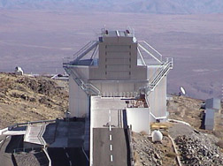
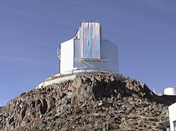
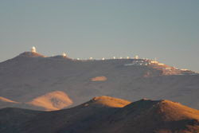
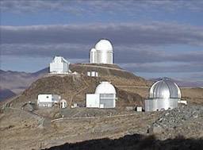

New Technology Telescope
Inaugurated in 1990 was a 3.5 meter telescope on an arid mountaintop in Chile. It is the first telescope with "active" or computer-assisted optics. A thin, lightweight mirror is kept in shape with a number of actuators beneath. It is owned by the European Southern Observatory and located at La Silla Observatory, Chile.
|  |  |
|  |
La Silla Observatory is an astronomical observatory in Chile with eighteen telescopes. Nine of these telescopes were built by the European Southern Observatory (ESO) organisation |
|  |
 |
New Technology Telescope
Solar System Illustration
Solar System Concepts
Telescopes
| HyperPhysics********** Astrophysics | R Nave |